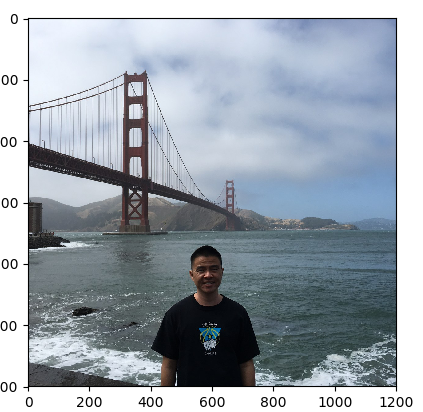
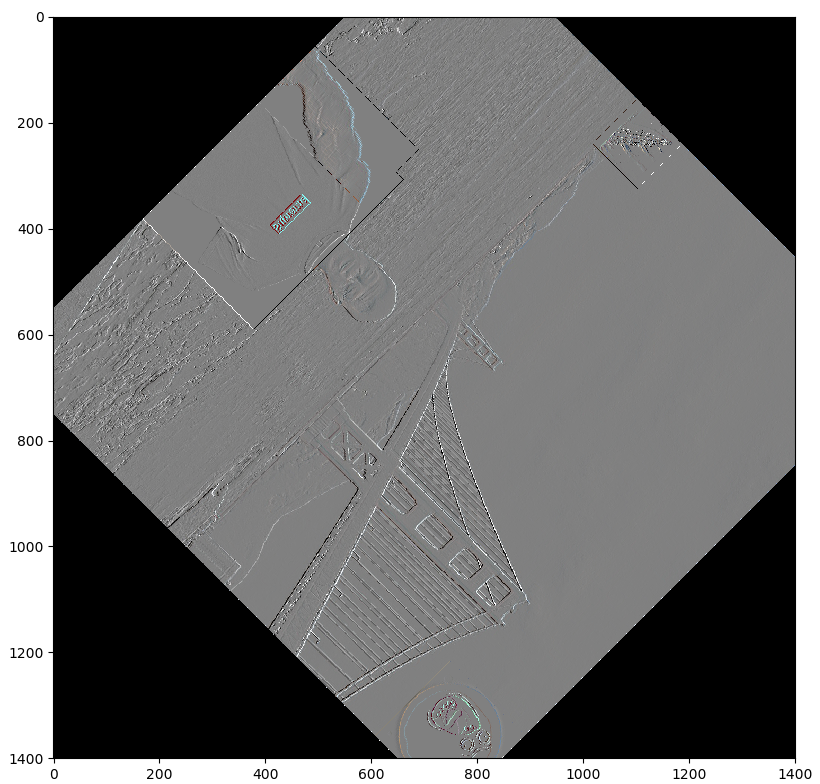
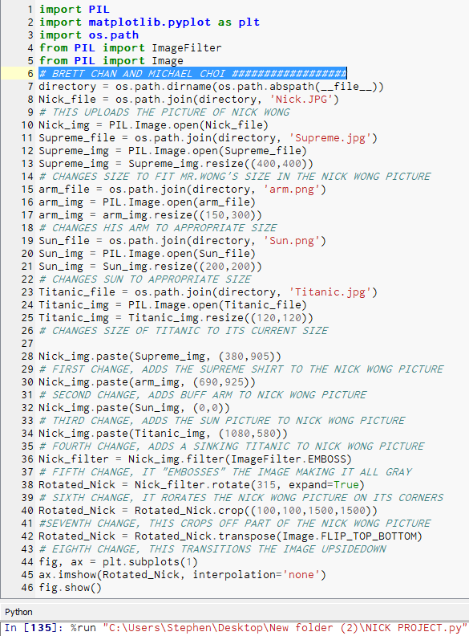

Remix of the Pong game
A difficult Ball game on Scratch
App Inventor Tic Tac Toe
There's an intruder in your house interactive story
My partner and I made 8 changes to a photo of Mr. Wong: SUPREME t-shirt, Buff Left arm, screaming sun, sinking ship (Titanic), “EMBOSSED” the Nick Wong photo, rotated photo on its corner, cropped off part of the photo, completely flipped the photo.
  